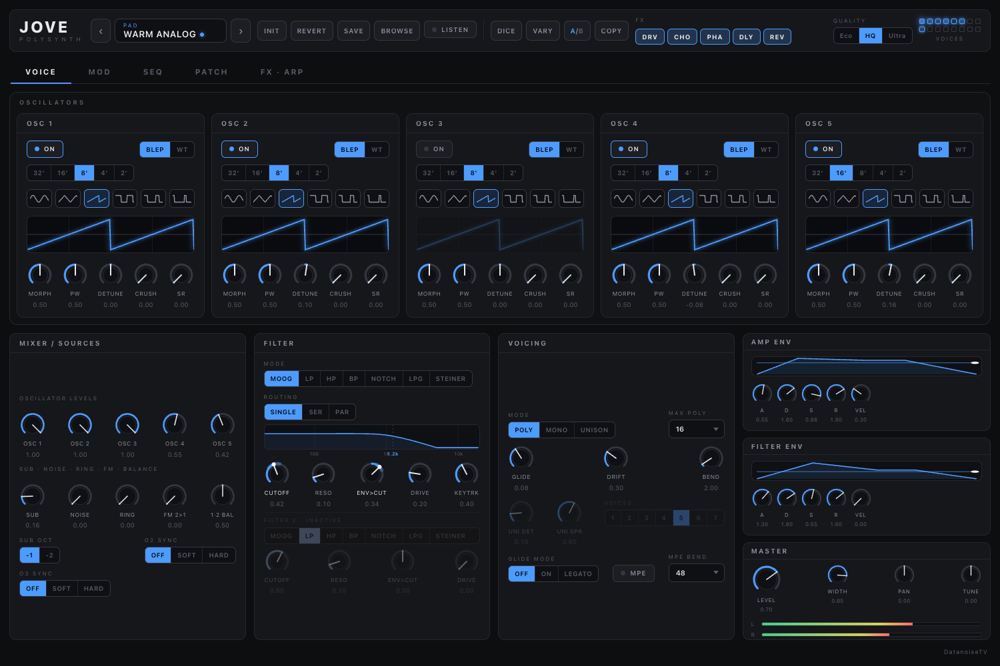
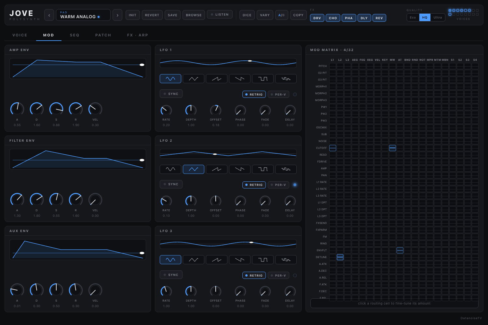
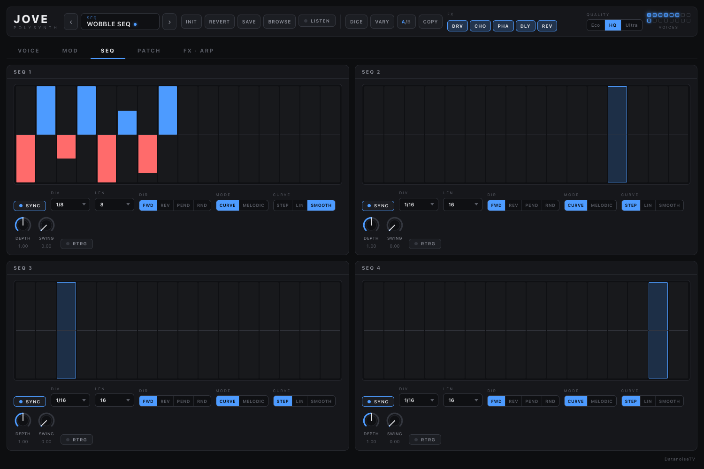
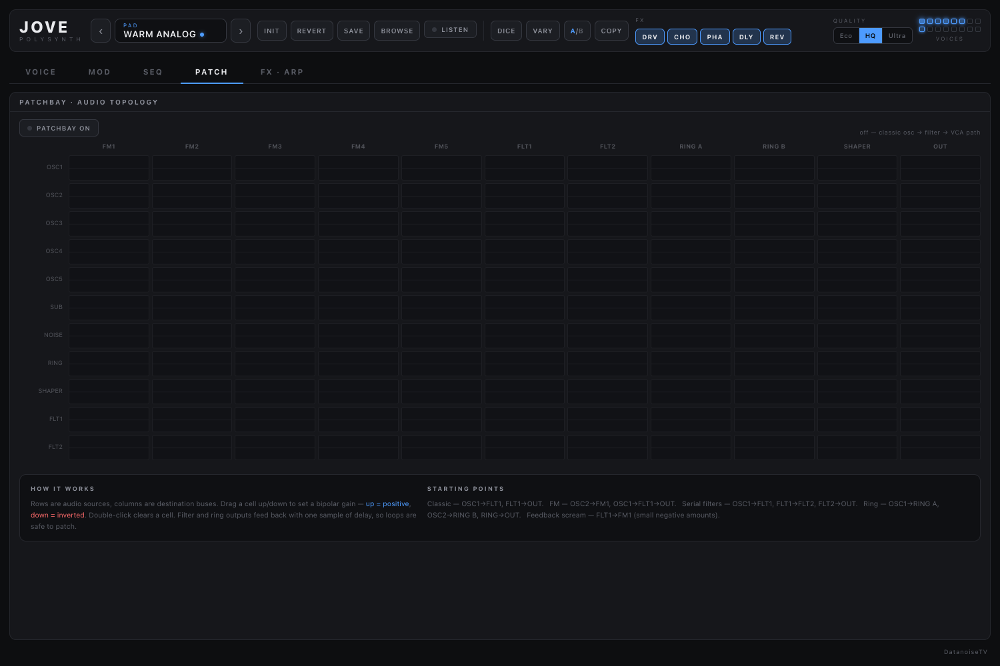
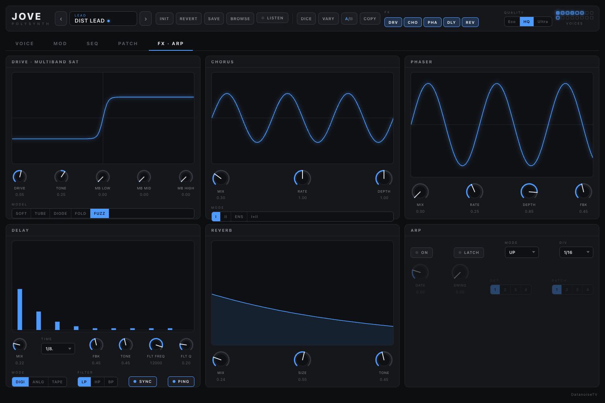

Five morphing oscillators, two filters, a 32-slot modulation matrix, four step sequencers — and an EMS-style patchbay that lets you rewire the signal path itself. Open source, GPL-3.0, no strings.
AU · VST3 · STANDALONE

Eight factory presets playing short phrases, rendered offline through the plugin’s own DSP. No external processing, no mastering — what you hear is what ships.
Each oscillator is band-limited and switchable between a BLEP morph engine (sine → triangle → saw → pulse with PWM) and a 64-table wavetable bank with continuous scanning. Footage, detune, bit-crush and sample-rate reduction, per oscillator.

Three envelopes and three LFOs feed a 32-slot matrix, edited as a source × destination grid. Active routes light up in the grid and appear on the destination knobs as range arcs with a live dot, so the patch shows you what is moving it.

Each 16-step lane is a drawing surface: drag across it to set values, snap to semitones in melodic mode, glide between steps, add swing, run it forward, backward or pendulum — then route it to any matrix destination.

Eleven audio nodes, eleven destination buses, a bipolar gain on every crossing. Switch it on and the fixed osc → filter → VCA path is replaced entirely: FM any oscillator from any node, chain the filters, or feed a filter output back into an FM input for self-oscillating feedback. Loops are one-sample delayed, so no patch can hang or blow up the engine.

Five drive models with gain compensation, so drive adds harmonics instead of volume. Multiband saturation, chorus/ensemble, phaser, a tempo-synced delay with digital, BBD and tape colour, and a reverb voiced to stay in tune. The arpeggiator locks to the host transport, with ratcheting, swing and latch.
The full voice path runs at 1×, 2× or 4× oversampling. Gain staging is designed so the output limiter almost never engages — it protects, it doesn’t colour.
Every tagged release ships CI-built binaries for macOS (universal) and Linux; the source builds anywhere JUCE 8 does. The macOS zip is currently unsigned — after copying the bundles, clear the quarantine flag once per bundle.
# macOS (from the release zip) cp -R Jove.component ~/Library/Audio/Plug-Ins/Components/ cp -R Jove.vst3 ~/Library/Audio/Plug-Ins/VST3/ xattr -cr ~/Library/Audio/Plug-Ins/Components/Jove.component xattr -cr ~/Library/Audio/Plug-Ins/VST3/Jove.vst3 # or build from source (CMake 3.22+, C++20) git clone --recurse-submodules https://github.com/DatanoiseTV/jove cd jove && cmake -B build -DCMAKE_BUILD_TYPE=Release && cmake --build build -j